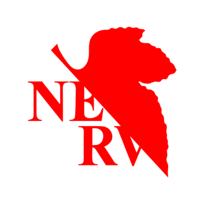

paulmillr-qr
Read and generate QR code patterns using @paulmillr/qr.js library. Available on GitHub and NPM.
DISPLAY: FPS, CAMERA:
FPS, DECODE:
FPS
INPUT: unknown
Statistics
| Category | Last | Min | Max | Mean | Median | P95 |
|---|---|---|---|---|---|---|
| All | — | — | — | — | — | — |
| Hit | — | — | — | — | — | — |
| Miss | — | — | — | — | — | — |
Decoded:
Decode a QR code from a photo or screenshot (uses slow, high-accuracy mode).
